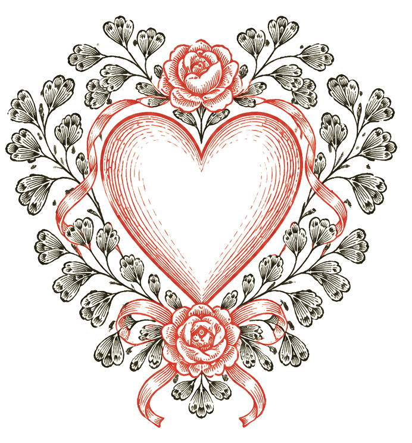
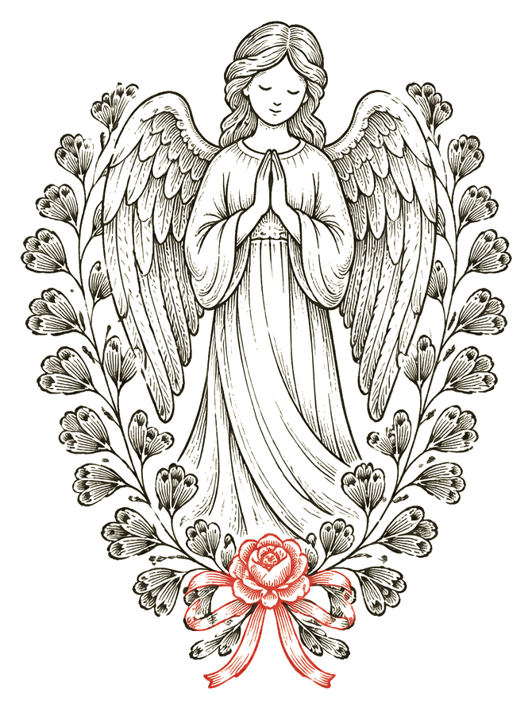

24 luker frem mot jul. Bak hver luke venter to øvelser, velg én eller gjør begge to. Gjør det for din egen skyld, og kjenn etter hvordan kroppen føles underveis og etterpå.
Passer ikke en øvelse, eller er du usikker på teknikken? Bytt den gjerne ut med et annet alternativ i samme kategori som føles trygt og godt for deg.
Heia deg! ❤️
Hver luke inneholder én styrkeøvelse og én tilstedeværelses- eller meditasjonsøvelse. Luken låses opp på sin egen dato i desember, og blir værende åpen resten av måneden. Du kan altså gå tilbake og åpne tidligere luker igjen når du vil, men de dagene som ikke har vært ennå, er fortsatt låst.
Luke 24 er litt større enn de andre. Det er tross alt julaften! Nederst finner du også en avlang bonusluke som åpner 25. desember, med en liten oppgave om å lage din egen affirmasjon for 2027.
